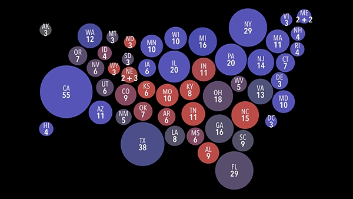
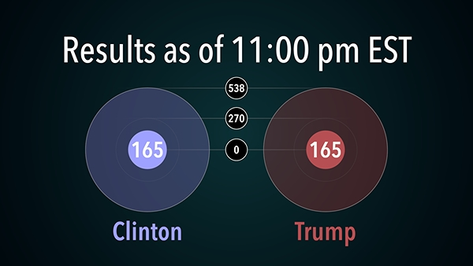
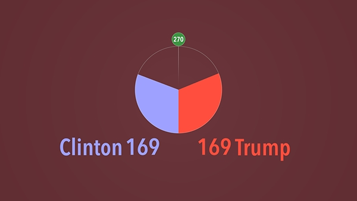
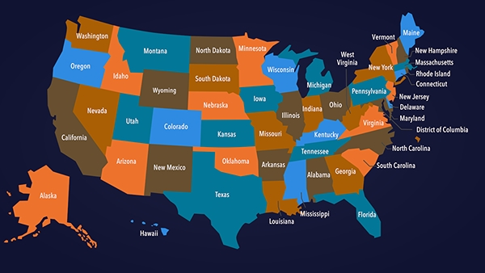
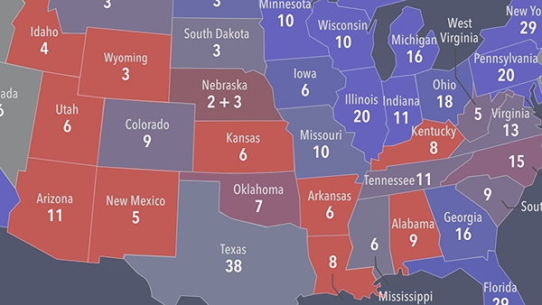
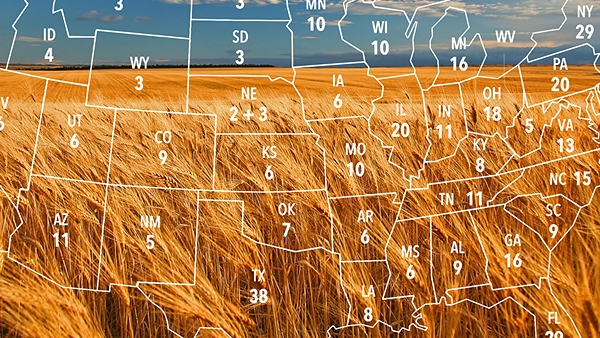
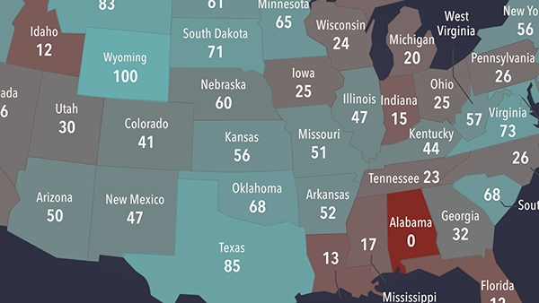
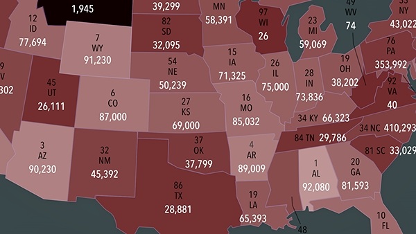
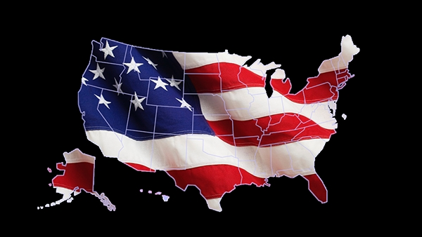
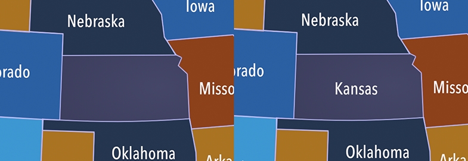

The United States has 538 electoral votes total, requiring 270 votes to win the presidency. States award votes based on population, ranging from 2 to 55 votes per state. Most states operate on a winner-take-all basis, though Nebraska and Maine can split their electoral votes. These numbers appear throughout the graphic templates.
Displays electoral counts with callouts for 0, 270, and 538.
Tracks progress toward 538 with relevant callout markers.
Electoral visualization with adjustable rotation orientation.
Customization options available. Add drop shadows or composite custom graphics.
State mapping allowing left- or right-vote coloring. Maine and Nebraska can display split results. Includes color adjustment features and single-color mixing options.
Geographic and proportional area visualizations with optional name display.
State outlines with optional electoral vote labels, designed for compositing.
For approval ratings and completion metrics with color-coded percentages and pending state options.
State-by-state ranking tool for comparative data.
Masking effects for clips with individual state toggle controls.
Title templates matching the design system typography.
Additional title template.
Attribution and source reference template.
Configuration option for persistent state name display.
